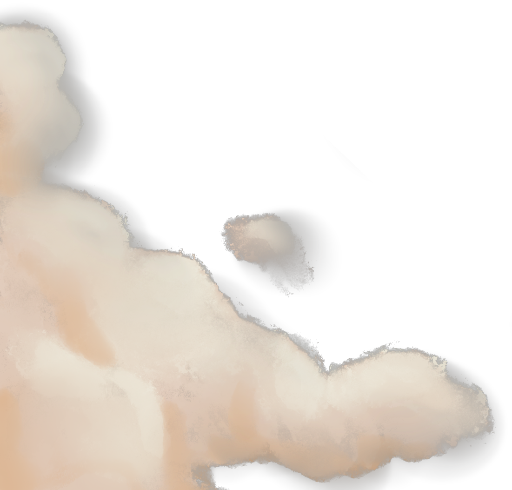
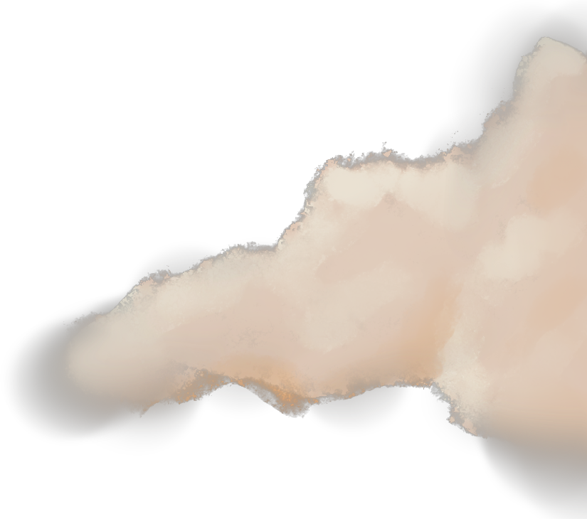
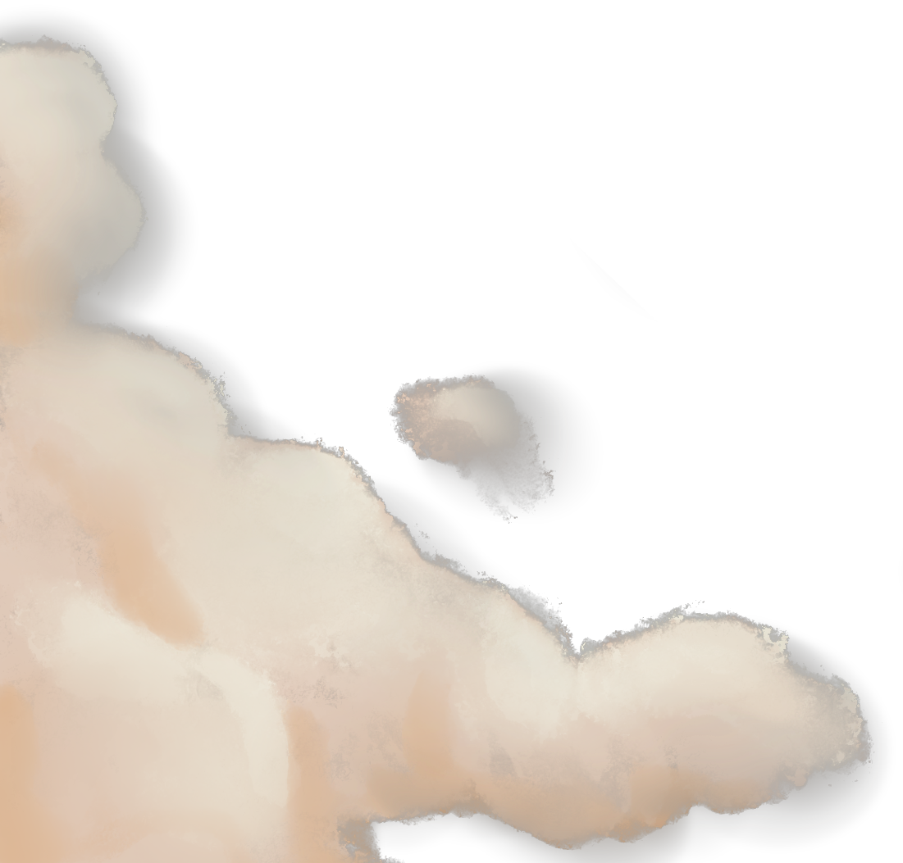
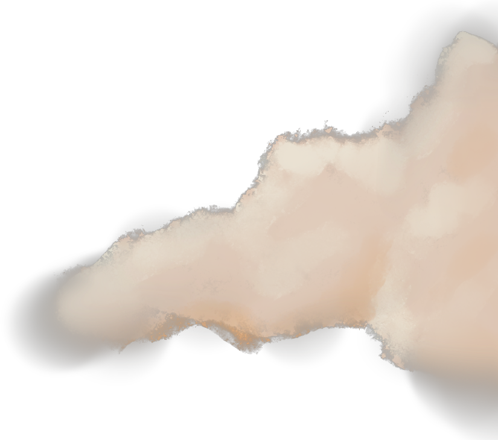

Cruzo la calle, paso por la reja que rodea la plaza y me siento en un banco a esperar a que me llegue su mensaje. Hay unas cuantas personas pero el lugar se siente vacío, como si le faltara algo. Hace poco conocí en Internet el concepto de “backrooms” y así se siente esta plaza. Un espacio inhóspito, rodeado de edificios vacíos. Se parece más un pasillo que a una plaza. Un “no lugar” que creo haber visto antes en un sueño.